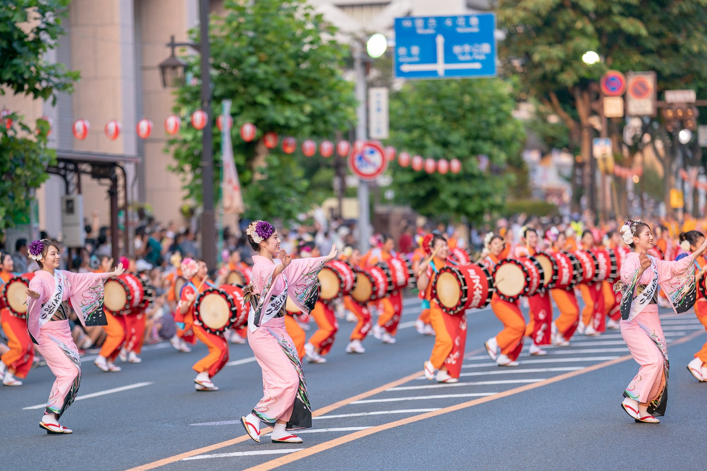
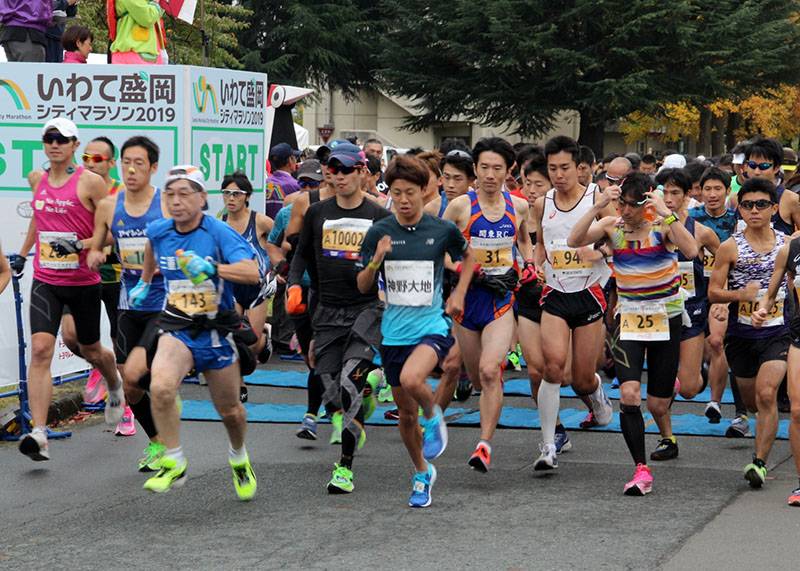
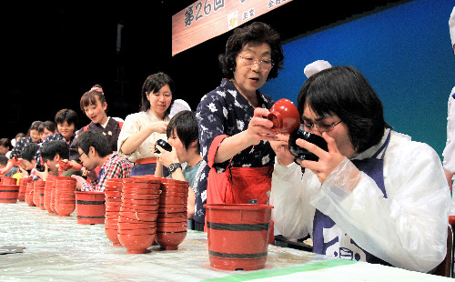

岩手の魅力
盛岡さんさ踊り

盛岡さんさ踊りは岩手県盛岡市の400年以上続く伝統的な踊り祭りです。毎年8月上旬、色とりどりの着物や笠を身にまとった踊り手が太鼓のリズムに合わせて練り歩き、元気な踊りを披露します。軽快な雰囲気で、地元住民と観光客が一体となり、夏の楽しいひとときを共有することができます。
| 住所 | 岩手県盛岡市中央通 |
|---|---|
| 開催日 | 8月1日～8月4日 |
| 公式HP | https://sansaodori.jp/ |
盛岡シティマラソン

盛岡シティマラソンは、美しい市内コースを走りながら市民とアスリートが交流するイベントです。地域の魅力を感じながらランニングを楽しむことができます。毎年秋に開催され、ランナーや地元のコミュニティが一堂に集います。
| 住所 | 岩手県盛岡市内 |
|---|---|
| 開催日 | 10月27日 |
| 公式HP | https://iwate-morioka-city-marathon.jp/ |
わんこそば全日本大会

「わんこそば全日本大会」は岩手県の伝統料理「わんこそば」を競うイベントです。わんこそばを食べるスピードと量が競われるユニークな競技となっています。岩手県内外から多くの食通や観光客が集まり、食通や観光客が賑わいます。
| 住所 | 岩手県花巻市若葉町三丁目16-22 |
|---|---|
| 開催日 | 2月11日 |
| 公式HP | https://www.kanko-hanamaki.ne.jp/special/wankosoba/ |